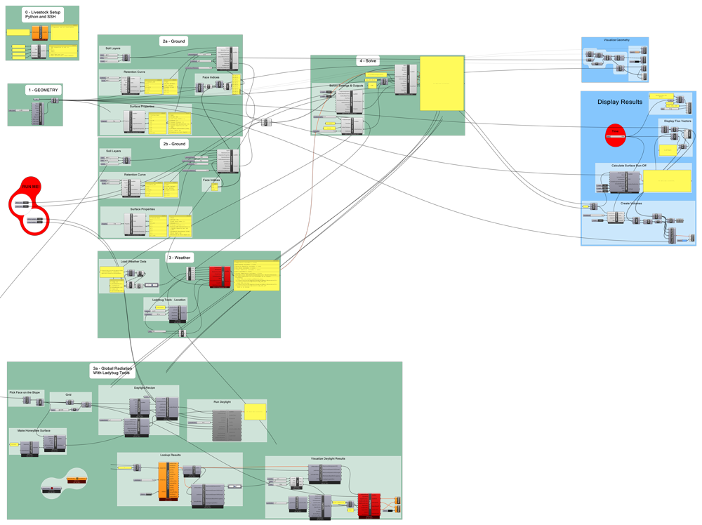

In this tutorial we will walk through making a Grasshopper script for simulating a simple glass surface run-off case.
We will use CMF and Livestock to compute the run-off, so make sure you have it installed. A description can be found here. You can find the Grasshopper script for the tutorial here
)
{kind=link}
0 - Livestock Setup
We will start in the top left corner at the group: "0 - Livestock Setup". Here you have to put in the path for your Python interpreter and your SSH connection. Find more details on that here
1 - Geometry
For this tutorial I just made a surface in Rhino that I have imported and converted to a mesh. It should work with any other surface. So try to make your own.
2 - Ground
There are two ground groups. The top group sets the properties for all mesh faces, besides three corner faces, which the bottom group sets up. Today we will make a glass surface model, so we will try to mimic that:
- We will only use a single very thin soil layer
- We will use the standard CMF retention curve, but set the Ksat value very low, meaning that the water has a hard time penetrating the soil
- The surface properties will be those of sand
- We don't want any evaporation, so we set the ET-Method to 0
- The surface Run-Off Method needs to be 1, so we can see the dynamics of the run-off better.
- The faces indices should be the all besides the three corners.
This is currently the way to mimic a glass model in CMF. We will not have any evaporation and very little infiltration this way.
Group 2b is much like the top one, besides we have different face indices (the three corners) and we will put 5 m3 of water on each of them.
3 - Weather
At the moment we can't simulate with Livestock without inputting a weather, even though it will not effect the simulation since we don't have any evaporation.
You can use whatever you like - EPW or otherwise. One of the inputs is GlobalRadiation, which doesn't come from the weather file, so we need to simulate it with Honeybee. The setup can be seen in group 3a - Global Radiation. I will not go through it here, as it is a pretty standard setup.
4 - Solve
Everything is collected in the CMF Solve component. We need to give a path to where the simulation files should be saved, together with information on the outputs and solver settings. For outputs we only want the surface water volume and the flux. At the moment it is not possible to simulate less than one hour, so we set 1 as AnalysisLength. But we want to simulate what happens every 1 second, which equals to 0.0027 hours.
No we just need to press the buttons in the Run Me! group.
Now all you need is to wait until the simulation finishes and then you can visualize the results and maybe make a nice gif as I did.